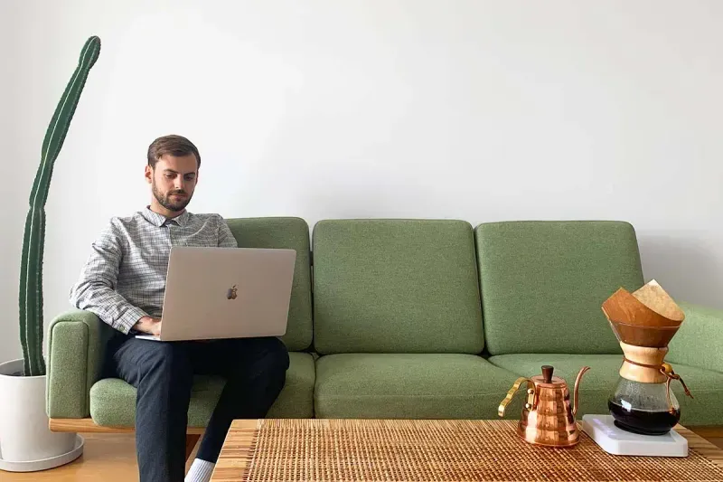
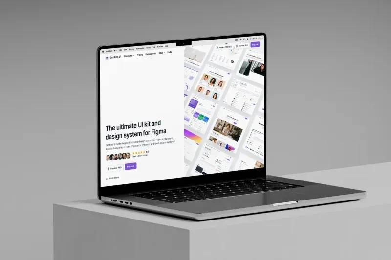

| Rahul | one.webp | two | tdree |
|
I'm a product designer from Australia making useful things for the internet and exploring the world. |
|  |
|
|  Untitled UI | Untitled UI Icons | Himalayas |
| Relume Library | Webflow Library | Good Books |
|
I'm a product and web designer from Australia. I enjoy working on product design, design systems, and Webflow projects, but I don't take myself too seriously. My work has been featured on Typewolf, Mindsparkle Magazine, Webflow, Fonts In Use, CSS Winner, httpster, Siteinspire, and Best Website Gallery. I'm a lifelong learner, inconsistent reader, and crappy golfer. I'm currently exploring the world with my partner and a carry-on backpack. At the moment we're in Spain. You can check out my work on Twitter or Dribbble. To get in touch, drop me a line. Please note I don't do calls or meetings. |
What I've been working on
|
I'm working on himalayas.app with some smart people. It's our love letter to remote work. We're releasing new features via Twitter and on our changelog. In late 2021, I created Untitled UI, the ultimate UI kit and design system for Figma that focuses on quality. This library started as a side project but has grown into the largest and best-selling Figma UI kit in the world. I also created Untitled UI Icons, a clean, consistent, and neutral icon library crafted specifically for modern UI design. This was the #1 Product of the Week on Product Hunt and is now the highest-rated icon library on Gumroad. In 2022, I released two Untitled UI Webflow kits on Relume and Webflow Libraries. I built (and later sold) goodbooks.io, the largest curated collection of 8,500+ book recommendations from some of the most successful and interesting people in the world. This project was the #1 Product of the Day on Product Hunt. Prior, I was Head of Design @ UpGuard, one of the world’s fastest-growing cyber security startups with customers including NASA, PagerDuty, and the New York Stock Exchange. I was the second employee @ Spaceship. Spaceship was the fastest-growing new entrant in the world, growing to $100m in assets and amassing a 50k+ waitlist in 3 months. They're now managing over $1bn in assets. Along the way, I designed pitch decks that raised $40m+ in venture capital. I’ve worked with Australian startups that have gone on to raise $180m+ from some of the most notable investors in the world: |
|
I don’t have a background in design. This may sound alarming, but I consider a generalist approach an important asset. I studied Management and Finance at UTS, Sydney, before working as an Ops Manager in high-growth startups. This involved learning fast and wearing a lot of hats. In mid-2019, I decided I wanted to pursue design. Product design isn't as complicated or as difficult as everyone pretends it is. I believe good design should be simple and clear with a pragmatic focus on business growth. |
|
I don’t have a background in design. This may sound alarming, but I consider a generalist approach an important asset. I studied Management and Finance at UTS, Sydney, before working as an Ops Manager in high-growth startups. This involved learning fast and wearing a lot of hats. In mid-2019, I decided I wanted to pursue design. Product design isn't as complicated or as difficult as everyone pretends it is. I believe good design should be simple and clear with a pragmatic focus on business growth. |
| 2023 |
|
|
Designed and built using Webflow, Untitled UI, Relume, Client-first, and Netlify in less than 48 hours. Typeface is Suisse Int'l by Swiss Typefaces. This is my old site for posterity. I acknowledge Australia's First Nations peoples and their ongoing strength in practising the world’s oldest living culture. I acknowledge the Traditional Owners of the land on which my office stands, The Wurundjeri people of the Kulin Nation, and pay my respects to Elders both past and present. |